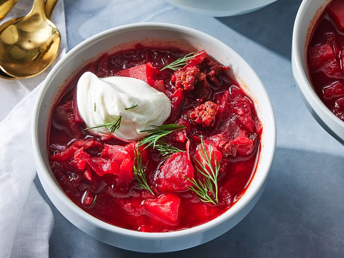

Borscht

Description
Борщ - наваристый свекольный суп с насыщенным вкусом и ярким цветом.
Подается со сметаной, свежей зеленью и чесночными пампушками.
Готовится дольше, но получается на несколько дней - на следующий день
становится только вкуснее.
Ingredients
- Свекла - 2 шт.
- Капуста - 300 г
- Картофель - 3 шт.
- Морковь и лук - по 1 шт.
- Мясо (говядина) - 400 г
- Томатная паста - 2 ст. ложки
- Соль, перец, лавровый лист, сметана для подачи
Steps
- Сварите мясной бульон (около 1 часа).
- Обжарьте лук, морковь и свеклу с томатной пастой.
- Добавьте в бульон картофель и капусту, варите 15 минут.
- Введите зажарку, посолите, поперчите, добавьте лавровый лист.
- Варите еще 10 минут, подавайте со сметаной и зеленью.
Home